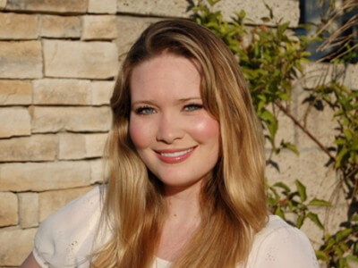

Top 5 Authors of 2023
1.Sarah J.Maas
Sarah J.Maas is a best-selling author with her popular fantasy series A Court Of Thorns and Roses, the Crescent City series and The Throne of Glass series, they have ben translated in over 37 languages. There is multiple editions and special editions as well.
2.Colleen Hoover

She has sold over 20,000 copies of her books. Her romance novel, It ends with us, and it's sequel It starts with us, ranks very high with readers everywhere.
3. Stephen King

Stephen King is known for his genre of horror. His best-selling book being It, with numerous film adaptations.
4.Taylor Jenkins Reid

She is a New York best-selling author for Daisy Jones and the Six, which has been adapted into an Amazon Prime Original Series. She also has a best-selling hisorical-fiction, The Seven Husbands of Evelyn Hugo.
5. Emily Henry

Emily Henry is a romance author. If you enjoy a friends to lover, read People We Meet On Vacation, or enemies-to-lovers there is Book Lovers or Beach Read. Lastly if you want a second chance-romance read Happy Place.
6.Christina Lauren

Christina Hobbs and Lauren Billings share the sixth spot for best-selling author with their numerous collaborations.Fans of second-chance romances should read Love and Other Words, while those who love an enemies-to-lovers should read The Unhoneymooners.
7. Leigh Bardugo

An American Fantasy writer whose works have been in many televison adaptations with many dark academia novels. Her most sucessful series being Shadow and Bone.
8.Rebecca Yarros

Best known for her fantasy hit Fourth Wing and Iron Flame. Fans loved the special edition covers with sprayed edges.
9. Kristin Hannah

Kristin Hannah, according to readers the queen of historical fiction, she's been writing since 1991. Firefly lane is about a coming-of-ge story about finding our life path. Or a more traditional historical fiction she has The Nightinggale of The Great Alone
10.Tessa Bailey

She has many funny heart-warming contemporary romance novels. Her most popular and small town romance, It Happened One Summer.